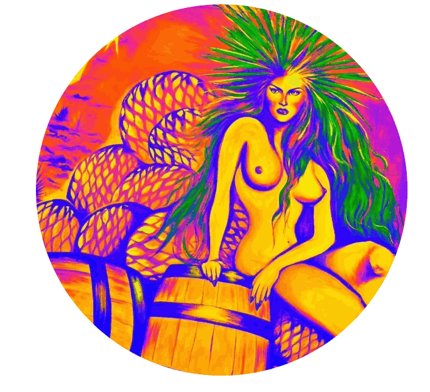
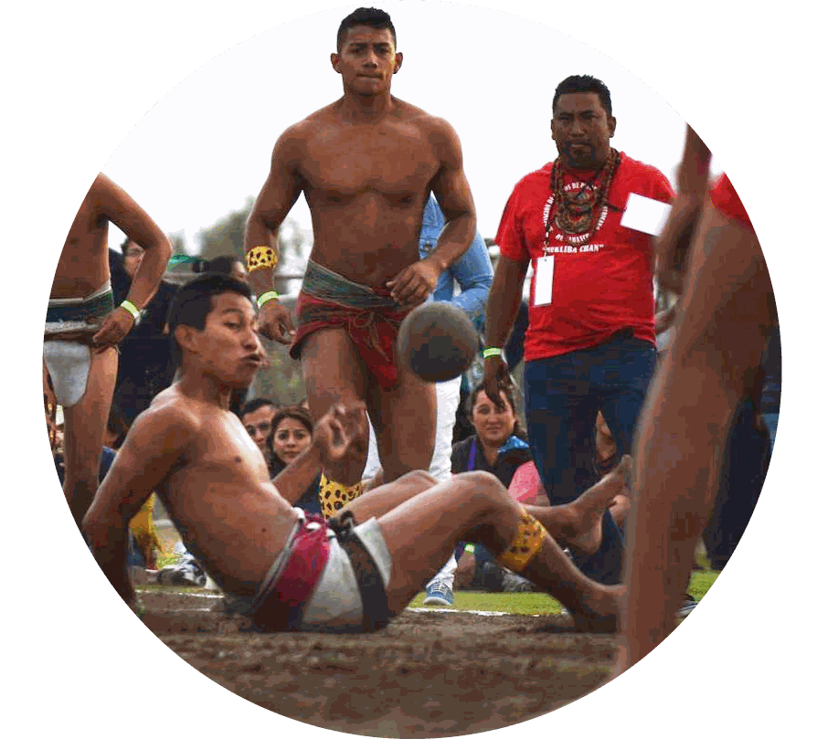
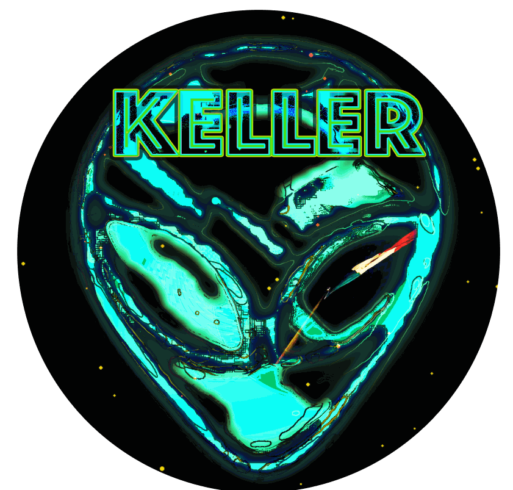
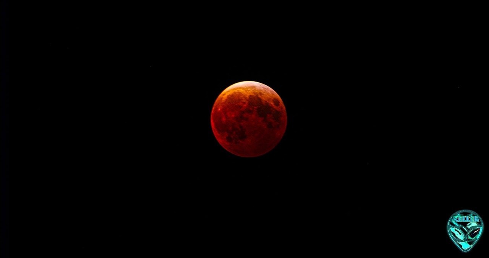

Acerca de •Kel£ǝr•

Misión
Con •K e l £ ǝ r• la misión es capturar la riqueza natural y cultural de México a través de la fotografía profesional. La plataforma busca construir un acervo visual que permita, mediante la imagen, adentrarse en el país y descubrir a su gente, su cultura y su naturaleza.

Historia
En 2017 nació •K e l £ ǝ r• con el propósito de crear un stock fotográfico que capturara la esencia de los lugares en México que visita. La pasión por la fotografía profesional y por mi país ha sido el motor de crecimiento, evolución y expansión continua de este proyecto artístico. Hoy, en su noveno año de desarrollo, sigue llegando a más personas a través de las plataformas digitales donde tengo presencia, consolidándose como un esfuerzo vivo y en constante transformación.

Enfoque
Como creativo, desde que comencé a hacer fotografía, he adoptado el compromiso colectivo de promover y posicionar —a través de productos audiovisuales— la diversidad que nos distingue como nación frente al resto del mundo. Ante los retos derivados de la coyuntura internacional actual, ahora más que nunca, considero un deber: continuar proyectando y visibilizando a México.
•Kel£ǝr• por México
Comunícate

WhatsApp